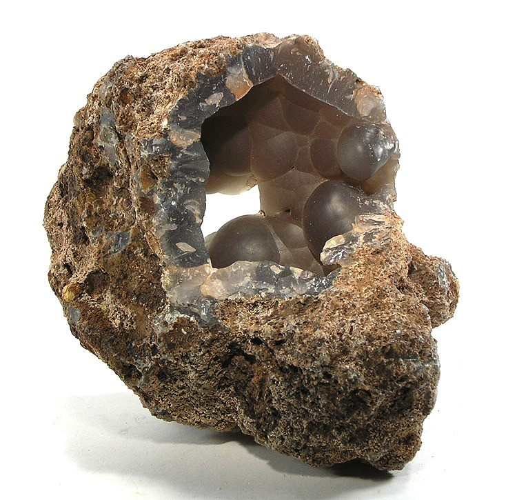
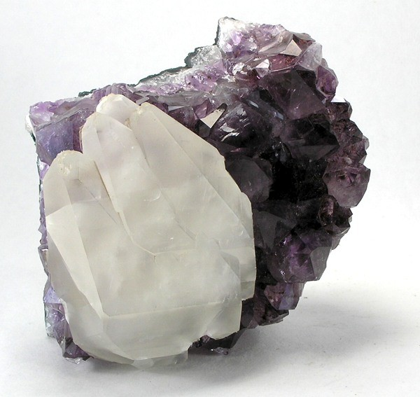
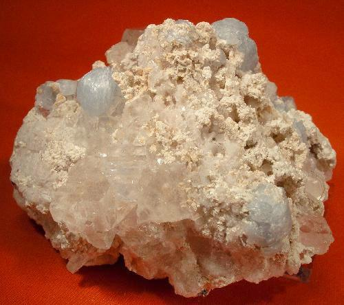
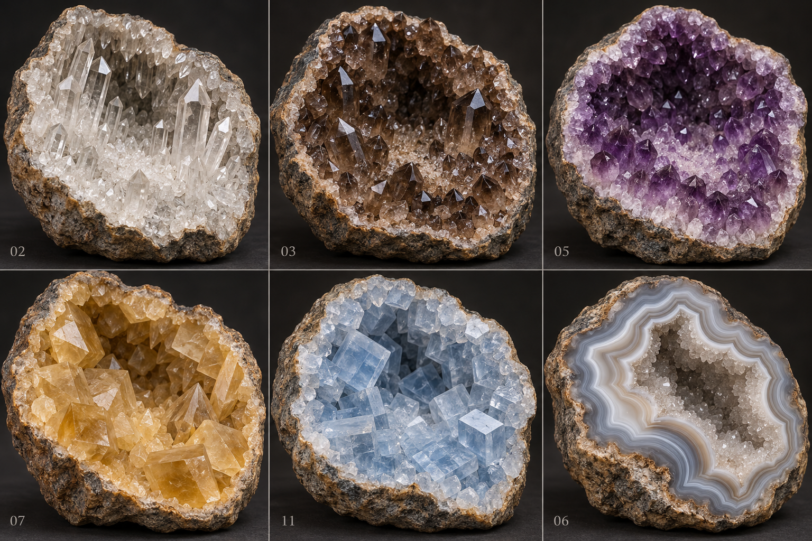

2026-10-30 · 葡萄状 V2 / V3 实际三维对比 · 12 类实际模型试玩 · 游戏
这次修正：整个内壁、洞底与后壁连续密集覆晶，保留有深度的不规则空腔。葡萄状不能只在空碗里放几组圆球。天然标本存在差异；“满铺”是本游戏选定的外观方向。



细闪葡萄状晶洞：实物照片与完整覆晶的文字说明（版权照片仅链接）
形态资料：石英 · 方解石 · 天青石
| 品种 | 形态观察与描述 | 建模方向 |
|---|---|---|
| 白晶细闪 | 连贯浅色细晶底，局部短晶簇 | 保留已单独修订的 V2，不回退为密集碎石 |
| 透明长柱 | 六方侧面可辨，柱长有梯度，尖端互相错落 | 密集短底晶搭配几群较长晶柱 |
| 烟晶 | 灰褐半透明石英，粗短柱与较长柱交错 | 粗柱、不同尺寸和倾角，避免黑色空隙 |
| 浅紫 | 浅色根部、较淡紫晶端，细密石英簇 | 较小较短晶簇覆盖内壁 |
| 深紫 | 密集较粗晶头，深紫端部与浅色根部 | 粗短柱与多个菱面终端，非荧光发光 |
| 玛瑙条带 | 沿空腔轮廓弯曲的灰白半透明条带 | 较厚连续条带与小型内侧细晶，不是叠纸片 |
| 蜜黄方解石 | 暖蜜色玻璃光泽，斜切菱面和犬牙晶形 | 菱面块体与少量尖长犬牙 |
| 白方解石 | 奶白半透明，宽平斜切晶面 | 互生菱面体，避免六方石英同模换色 |
| 葡萄状 | 圆丘大小交错并互相融合，整片洞壁连生，极细石英晶皮细闪 | 中心、后壁、底部均覆盖，连续体表皮附着小晶面 |
| 黑矿共生 | 深色晶体嵌于浅色石英底，不是整洞漆黑 | 密集浅色石英与成束深色柱体组合 |
| 天青石 | 浅灰蓝板柱，宽平晶面，斜方外形 | 片柱状与长方截面，未来品种仅图鉴预览 |
| 石英与方解石 | 细石英晶床上长出较大菱面方解石 | 两类独立几何与材质 |
根据上面的照片观察和文字描述，使用内置 imagegen 生成。概念图的细节与透光程度不等于当前模型已实现；GLB 是独立程序建模，没有把照片贴上去冒充三维。

